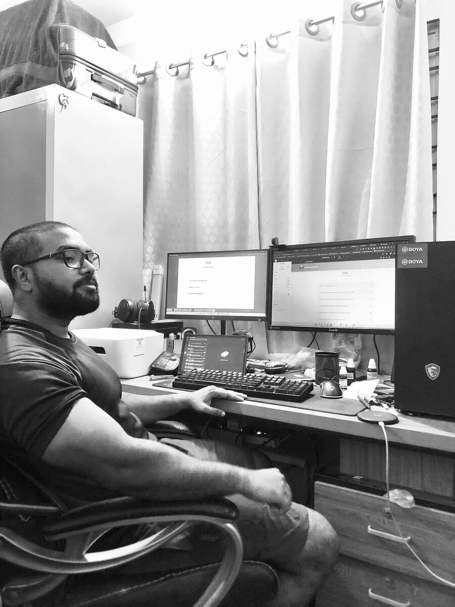

Dwaipyan Mandal (also written Dwaipayan) is a technology professional, entrepreneur and NGO executive based in Dhaka, Bangladesh. He is Chief Executive Officer of Surjamukhi Sangstha (SMS), a non-governmental organisation where he has worked since 2020; co-founder of ED Shield Solutions; and a web developer who has built websites, web applications and CRM automations for international clients for more than six years.

01 The journey
I studied Computer Science & Engineering at Stamford University Bangladesh, graduating in 2022 with a CGPA of 3.34. The projects from those years were practical ones — a small-business management system and a university attendance system in ASP.NET MVC, and a driver-drowsiness detector built on a convolutional neural network.
While still studying, in January 2020, I joined Surjamukhi Sangstha to run its IT and manage projects. That is where I learned that a project is mostly people, deadlines and honest reporting, and only partly technology. The same year I began building websites for clients outside Bangladesh, and that work grew into my second career.
I completed a Professional Masters in Information Technology at the Institute of Information Technology, Jahangirnagar University, where my project report examined cyber resilience in Bangladesh's ISP ecosystem. On 26 October 2026 Surjamukhi Sangstha appointed me its Chief Executive Officer.
02 Technology career
Most of my client work is for businesses abroad: WordPress, Elementor Pro, WooCommerce and Shopify sites, custom web applications, and the GoHighLevel and n8n automations that make a website capture a lead and follow up on its own. Live examples — from a North Carolina real-estate company to a tour operator in Bora Bora — are in the portfolio.
03 NGO leadership
At Surjamukhi Sangstha I ran IT and managed projects, including programme activities involving the International Labour Organization and Dhaka South City Corporation. Programme results belong to the whole team and our partners; I describe my part, not theirs. The leadership page records the CEO role as its responsibilities and initiatives are confirmed.
04 Entrepreneurship
ED Shield Solutions is a web design and development company in Dhaka that I co-founded and run day to day. We build WordPress websites and online stores, take on white-label development for agencies, and set up CRM and workflow automation. We also build our own WordPress tools — for attendance and expense tracking — and use them ourselves.
05 Interests & learning
06 Professional philosophy
07 Direction
Three threads, carried together: leading Surjamukhi Sangstha well, growing ED Shield Solutions into a reliable partner for agencies and businesses abroad, and deepening my cybersecurity research through graduate study. This site will record each step as it happens — with dates, and only once it has happened.
08 Writing & media
None listed yet. Independent coverage will be listed here with the outlet, author, date and a link.
{%- endif %}09 Timeline